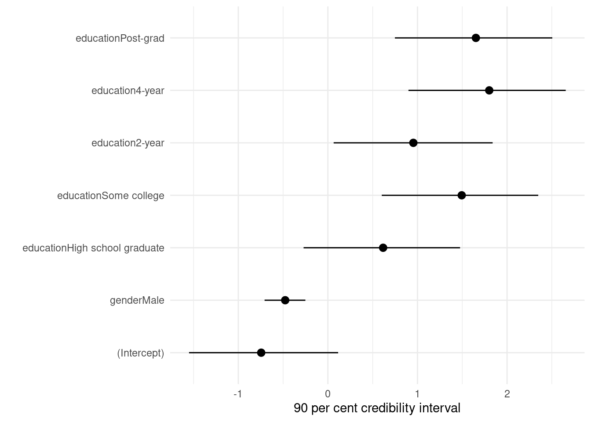
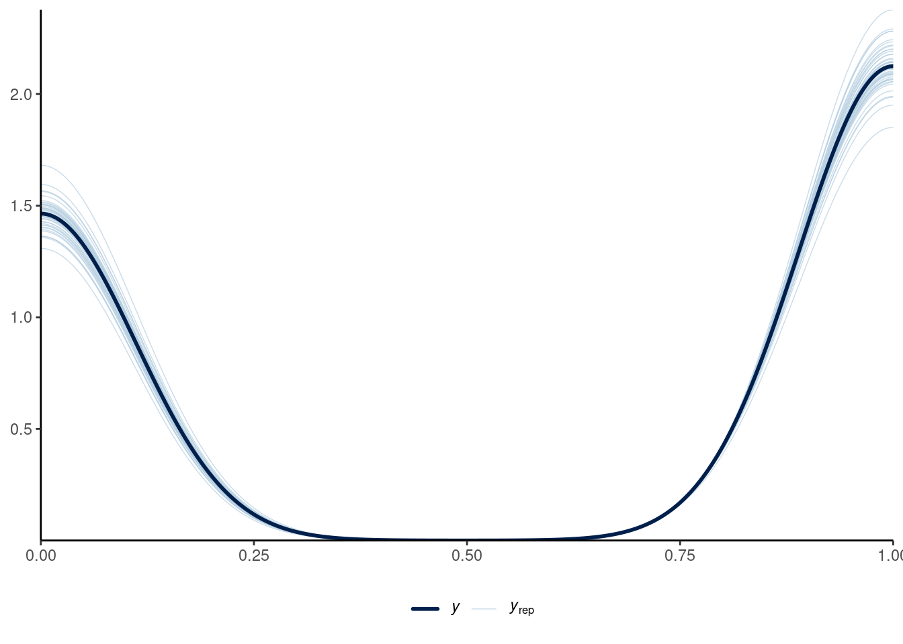
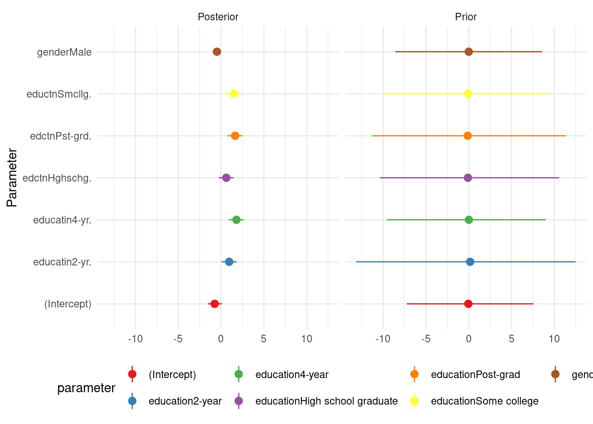
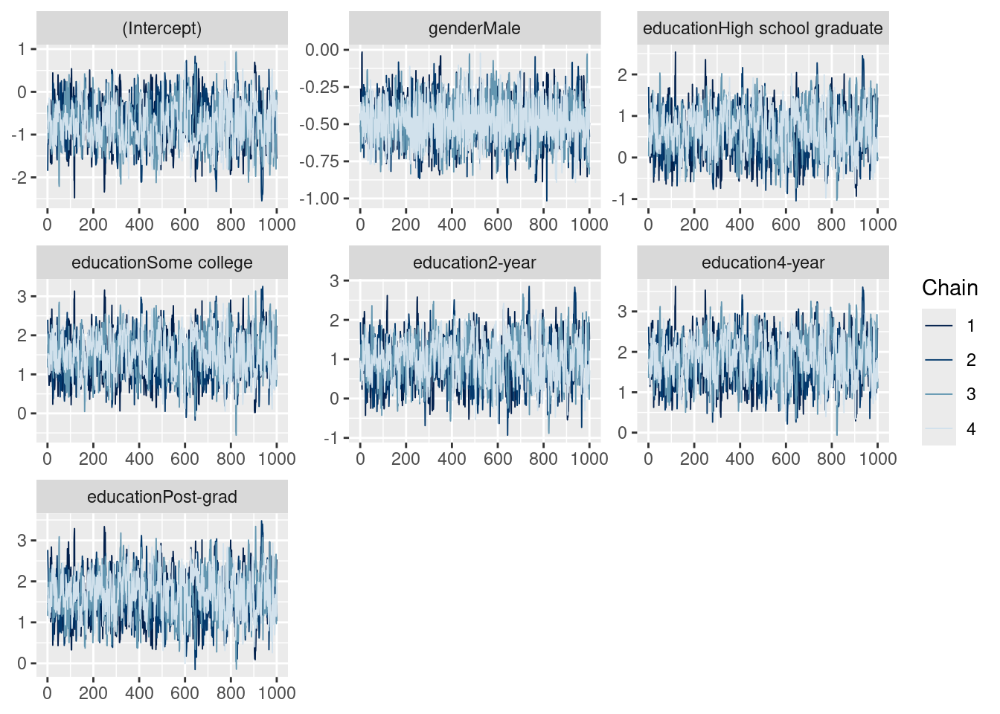
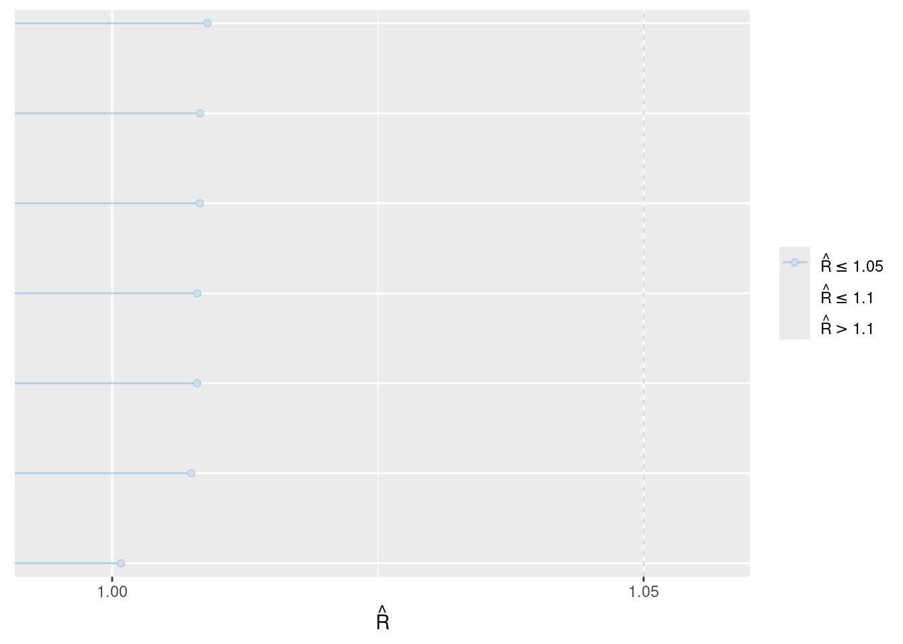

| First model | |
|---|---|
| (Intercept) | −0.74 |
| (0.52) | |
| genderMale | −0.48 |
| (0.14) | |
| educationHigh school graduate | 0.62 |
| (0.53) | |
| educationSome college | 1.49 |
| (0.54) | |
| education2-year | 0.95 |
| (0.54) | |
| education4-year | 1.80 |
| (0.53) | |
| educationPost-grad | 1.65 |
| (0.54) | |
| Num.Obs. | 1000 |
| R2 | 0.064 |
| Log.Lik. | −646.335 |
| ELPD | −653.5 |
| ELPD s.e. | 9.4 |
| LOOIC | 1307.0 |
| LOOIC s.e. | 18.8 |
| WAIC | 1307.0 |
| RMSE | 0.48 |
title: “Predicting the Outcome of Elections” subtitle: “A Study Utilizing Generalised Linear Model” author: - Yuchao Niu
thanks: “Code and data are available at: https://github.com/MelanieNiu/politics” date: today date-format: long format: pdf number-sections: true bibliography: references.bib
Introduction
You can and should cross-reference sections and sub-sections. We use @citeR and @rohan.
The remainder of this paper is structured as follows. Section 2….
Data
Some of our data is of penguins (?@fig-bills), from @palmerpenguins.
Talk more about it.
And also planes (?@fig-planes). (You can change the height and width, but don’t worry about doing that until you have finished every other aspect of the paper - Quarto will try to make it look nice and the defaults usually work well once you have enough text.)
Talk way more about it.
Model
The goal of our modelling strategy is twofold. Firstly,…
Here we briefly describe the Bayesian analysis model used to investigate… Background details and diagnostics are included in Appendix 7.
Model set-up
Define \(y_i\) as the number of seconds that the plane remained aloft. Then \(\beta_i\) is the wing width and \(\gamma_i\) is the wing length, both measured in millimeters.
\[\begin{align} y_i|\pi_i &\sim \mbox{Bern}(\pi_i) \\ \mbox{logit}(\pi_i) &= \alpha + \beta_1 \times \mbox{gender}_i + \beta_2 \times \mbox{education}_i\\ \alpha &\sim \mbox{Normal}(0, 2.5) \\ \beta_1 &\sim \mbox{Normal}(0, 5.02) \\ \beta_2 &\sim \mbox{Normal}(0, 6.34) \end{align}\]
We run the model in R [@citeR] using the rstanarm package of @rstanarm. We use the default priors from rstanarm.
Model justification
We expect a positive relationship between the size of the wings and time spent aloft. In particular…
We can use maths by including latex between dollar signs, for instance \(\theta\).
Results
Our results are summarized in Table 1.

Discussion
First discussion point
If my paper were 10 pages, then should be be at least 2.5 pages. The discussion is a chance to show off what you know and what you learnt from all this.
Second discussion point
Third discussion point
Weaknesses and next steps
Weaknesses and next steps should also be included.
Appendix
Additional data details
Model details
Posterior predictive check
In Figure 2 (a) we implement a posterior predictive check. This shows…
In Figure 2 (b) we compare the posterior with the prior. This shows…


Diagnostics
Figure 3 (a) is a trace plot. It shows… This suggests…
Figure 3 (b) is a Rhat plot. It shows… This suggests…

